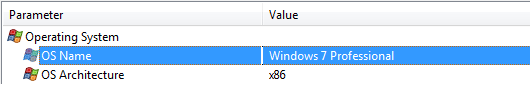

|
Aspia has a number of adjustable parameters that can be changed by going to the Preferences dialog (see Figure 1).

Figure 1
The left side of the dialog is a list of categories of parameters, which consists of:
- General Settings
- Data Filter
- System Tray Settings
When you click the «Save» the program settings will be saved and the window is closed. When you click the «Close» box
will be closed without saving the settings.
General
In the category of «General» (Figure 1) the user can change the language of the application used the theme of icons, a category that will be displayed when
start of the program, as well as a number of the following options:
- Start with Windows - parameter determines whether Aspia run automatically when you turn on Windows.
- Save windows positions - will be whether to retain the provisions of the windows. Effect on the main application
window and dialog box save the report. In the main window when removing this flag will not be saved size and position of the column separator
between categories and tree of the open category.
- Stay on top - whether the program is displayed on top.
- Use styles for information windows - in the presence of flag styles will be used (Figure 2), and in the absence of - respectively
will not be (Figure 3).

Figure 2

Figure 3
- Show alternating rows in the information windows - the mapping information will be used alternating light and dark lines,
which should improve the perception. If not checked, then all rows will have a white background.
- Allow kernel-mode driver - enable and disable the driver Aspia, which is used to retrieve data SPD, DMI (SMBIOS),
and information from the sensors.
If you disable the driver of the functionality of the program will be available.
Data Filter
Options in this category (Figure 4) allow you to select the most important data in the derivation of the information, and vice versa - to
weed out those that the user does not need.

Figure 4
Currently, data filtering is available for the categories «Event Logs» and «IE History». The parameters in these settings affect the output
of information in the window, and when you save the report.
System Tray
Settings in the category «System Tray» (Figure 5) impact on the icons to be displayed in the program tray.

Figure 5
- Start minimized to tray - when the program starts, it will be immediately terminated in the system tray.
At the same time it can be restored at any time by clicking the icon in the tray left mouse button. If the check box «Start minimized to tray»
will be checked as «Show program icon in tray», then the program icon will be displayed when minimized and maximized main window. If you select
«Show program icon in tray» will not be installed when you restore the window icon will be removed from the tray.
- Show program icon in tray - mark the check box icon Aspia will always appear in the system tray (if the program is running).
- Show sensor icons in tray - option enables display of icons in system tray sensors, which are allowed in the list below.
- Refresh rate - numeric value that specifies the amount of space (in seconds), which will be updated sensor readings on the
icon in the system tray.
- Processors and Hard Drives Icons - buttons in these fields allow you to customize the background color and font color for the icons of processors and hard drives. When you press these buttons displays a standard color selection dialog.
|